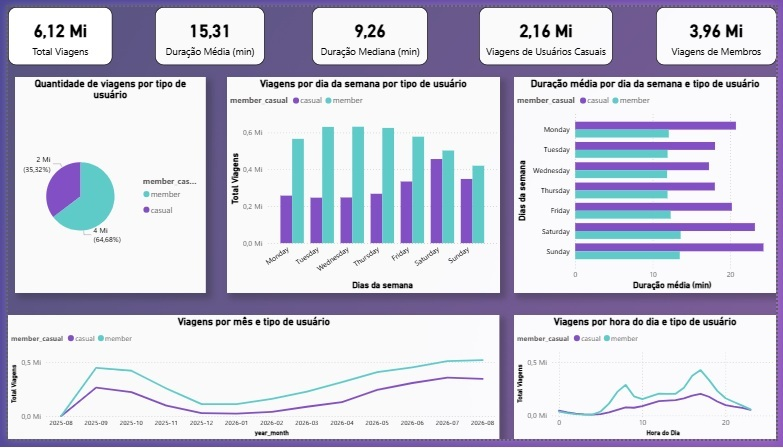

Contexto
Este é o estudo de caso final do Google Data Analytics Professional Certificate. A diretora de marketing da Cyclistic acredita que o crescimento depende de converter usuários casuais, que pagam por viagem ou por dia, em membros com assinatura anual.
A pergunta que me coube responder: como membros anuais e usuários casuais usam as bicicletas de maneiras diferentes?
Dados
Usei os dados públicos de viagens da Divvy, de setembro de 2025 a agosto de 2026: 12 arquivos CSV mensais, consolidados em uma base de 6.115.982 viagens e 13 colunas. Cada linha é uma viagem, com início, fim, tipo de bicicleta, estações e tipo de usuário.
Cerca de 21% das viagens não têm estação de início e 22% não têm estação final. Mantive essas linhas, porque a pergunta de negócio compara tipos de usuário e não depende da estação.
Processo
- Duplicatas: encontrei 35 IDs de viagem repetidos (70 linhas) e mantive a primeira ocorrência. Conferi também se havia viagens idênticas com IDs diferentes: nenhuma.
- Durações negativas: 29 viagens terminavam antes de começar. Todas eram da madrugada de 02/11/2025, entre 1h e 2h, quando terminou o horário de verão em Chicago e o relógio voltou uma hora. Como a duração real ficou ambígua, removi essas 29 viagens.
- Viagens extremas: 5.302 passam de 24 horas (todas com bicicleta clássica) e 158.875 duram menos de 1 minuto (todas elétricas). Em vez de apagar, testei se elas mudavam a conclusão: a diferença entre os grupos aparece na média, na mediana e no recorte de 1 minuto a 24 horas.
- Variáveis derivadas: duração em minutos, dia da semana, mês e hora de início.
- Base para o Power BI: 6.115.918 viagens, sem as colunas de estação e coordenadas, para deixar o arquivo mais leve.

Achados
O que os dados mostram
- Casuais pedalam por mais tempo em qualquer recorte: média de 20,7 contra 12,4 minutos na base completa, e de 18,4 contra 12,2 minutos considerando só viagens de 1 minuto a 24 horas.
- Membros usam a bicicleta para ir e voltar: concentram as viagens nos dias úteis, com picos no começo da manhã e no fim da tarde.
- Casuais usam para lazer: o sábado é o dia com mais viagens casuais, e a duração delas é maior nos fins de semana.
- A sazonalidade pesa mais para os casuais: o uso casual quase desaparece no inverno e volta com força a partir da primavera.
Recomendações
- 01Concentrar a campanha de assinatura nos fins de semana de primavera e verão, quando os usuários casuais estão no sistema. Quem executa: marketing, com a campanha pronta antes do início da temporada.
- 02Mostrar a economia da assinatura no fim das viagens longas. Casuais fazem viagens mais longas, então a mensagem no app, logo após a devolução, deve comparar o que a pessoa pagou com o que pagaria como membro.
- 03Oferecer a assinatura para quem já pedala nos horários de deslocamento. Viagens casuais em dias úteis, no começo da manhã ou no fim da tarde, são de quem já usa a bicicleta como transporte.
Limitações
- A base não identifica o usuário. Cada linha é uma viagem, então não dá para saber quantas pessoas são casuais nem quantas vezes cada uma pedala. Para encontrar os casuais frequentes, a Cyclistic precisaria cruzar essa análise com o próprio cadastro de clientes.
- Não há dados de preço nem de perfil dos usuários.
Próximos passos
- Analisar estações de origem e destino, que já estão na base, para localizar onde os casuais começam as viagens.
- Publicar o dashboard online e automatizar a atualização mensal.